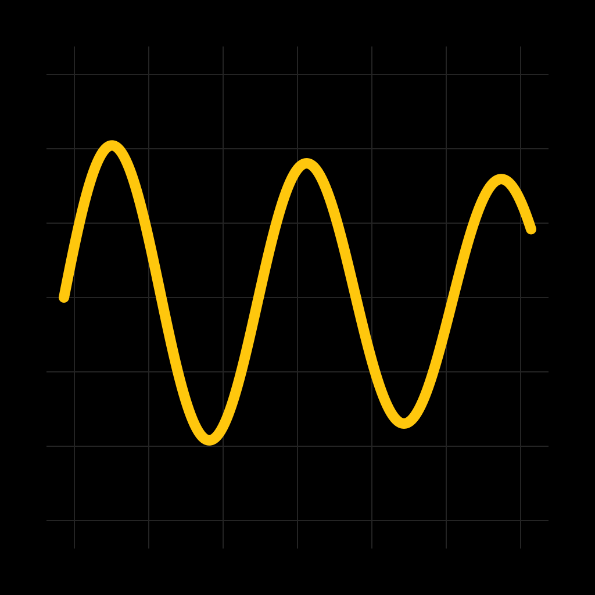
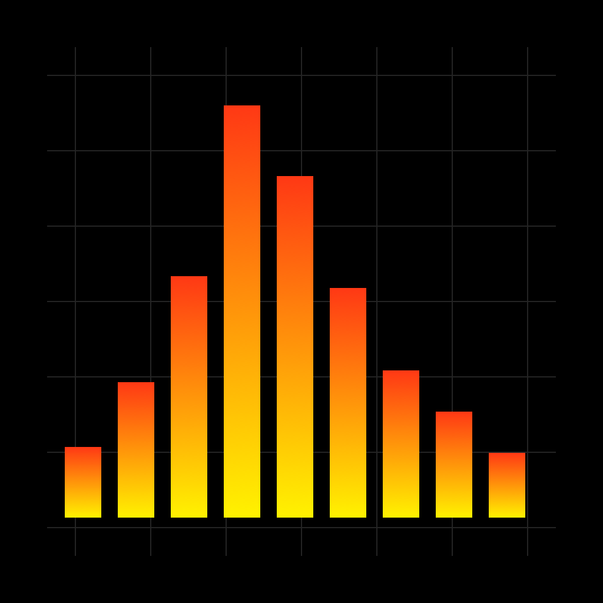
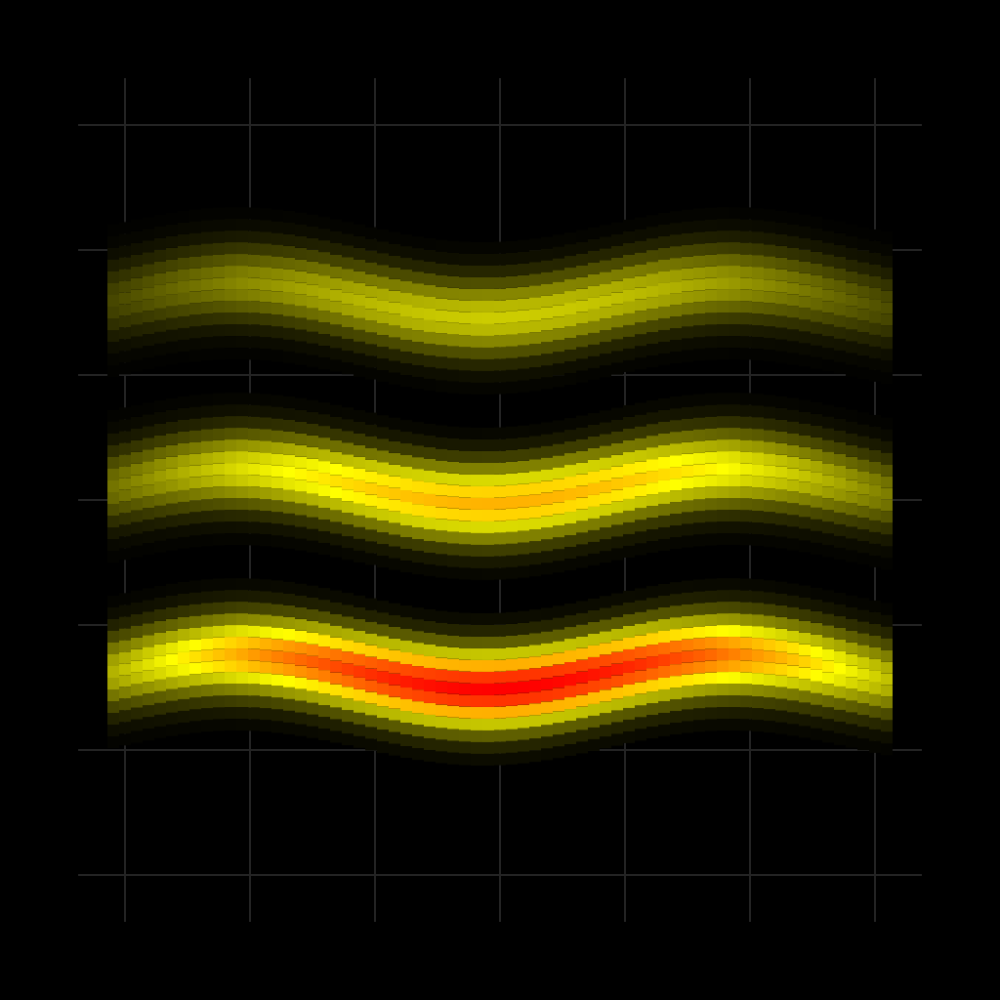

Fourier
Inspect a live frequency spectrum, compare peaks, and measure frequency, amplitude, and musical note. Choose a short window for faster response or a longer one to separate nearby frequencies.
Four focused instruments for iPhone and iPad, with a shared native audio engine and the familiar black, yellow, and red visual style.
Modern versions are in development and testing. App Store releases are not available yet.
Inspect a live frequency spectrum, compare peaks, and measure frequency, amplitude, and musical note. Choose a short window for faster response or a longer one to separate nearby frequencies.

Watch audio waveforms with adjustable time range, vertical gain, and edge triggering. Freeze a trace to inspect it and export sample data.

Explore sound energy in octave, third-octave, sixth-octave, or twelfth-octave bands. Choose averaging speed and compare peak levels.

Follow frequencies through time in a scrolling live audio spectrogram. Inspect the history and export its time, frequency, and amplitude data.
Allow microphone access when the app asks. Analysis runs locally on your device. Settings also includes a synthetic demo signal, so you can explore the controls without using the microphone.
Tap Freeze to hold the display and Resume to return to live audio. Double-tap the graph to freeze or resume; triple-tap or use Reset to clear peak or spectrogram history. Touch the spectrum, octave graph, or spectrogram to measure a frequency. Use the share button to export CSV data.
Short FFT windows respond quickly; long windows reveal more detail at low frequencies. Narrow octave bands naturally take longer to settle. The apps request a short audio buffer and the display’s highest available refresh rate, while reporting the actual configuration in Settings. Response depends on the device, microphone, display, and audio route. Bluetooth can add substantial delay.
Frequency-spectrum and spectrogram levels use peak dBFS; octave bands use RMS dBFS. These are digital signal levels, not calibrated sound-pressure measurements. Waveforms use full-scale amplitude.
If the microphone is unavailable, open iOS Settings → Privacy & Security → Microphone and enable access for the app. Reconnect external audio hardware and use the microphone control in the app’s Settings to restart capture. After an interruption, capture resumes when iOS allows it; the app stops capture in the background.
Open a support issue with the app name, app version, iPhone or iPad model, iOS version, audio input, and steps to reproduce the problem. GitHub issues are public; recordings are not required for a report.